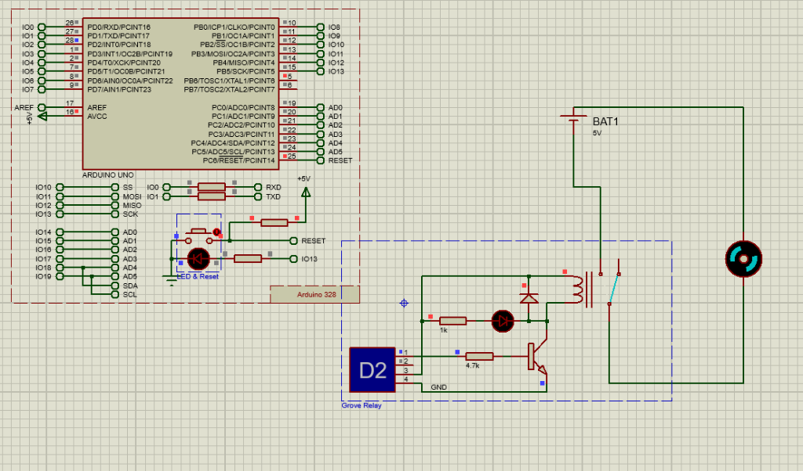
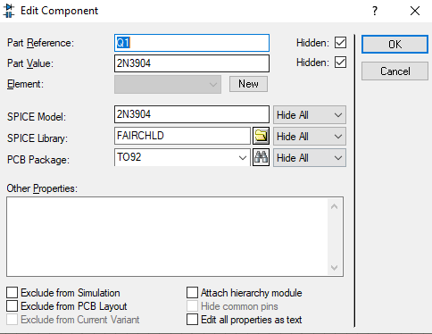
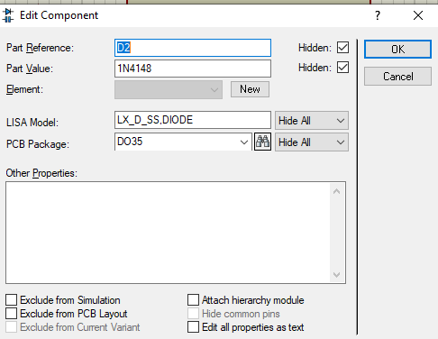
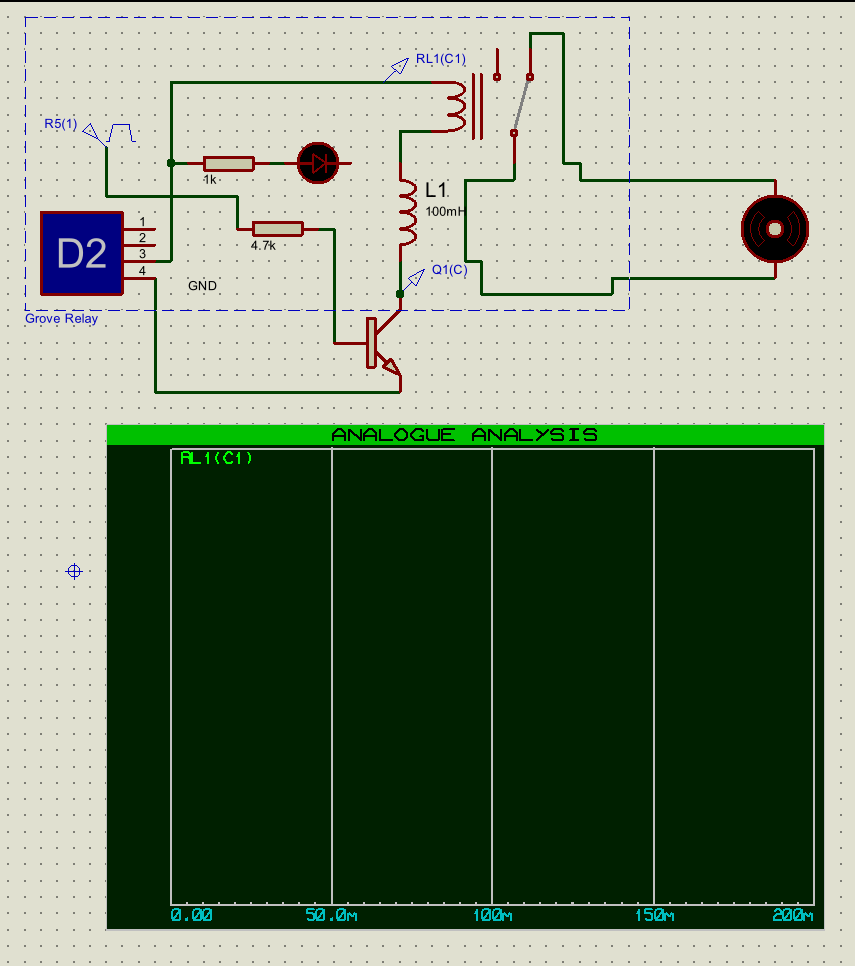
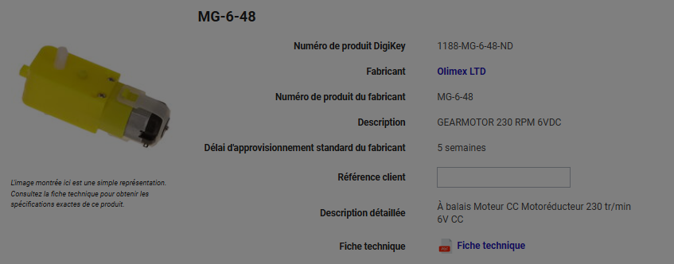
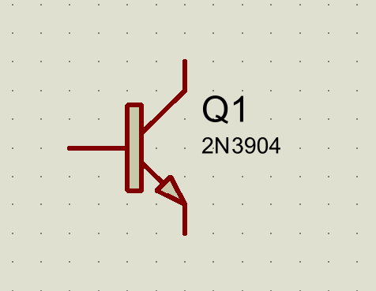
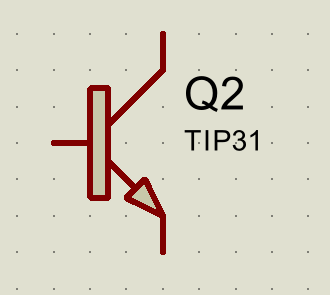
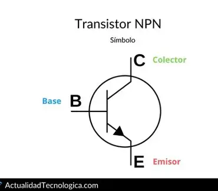

Caractérisation croisée Calcul théorique ↔ Simulation Proteus ↔ Mesurage réel sur Breadboard (TI myParts Kit), interfaçage d'un Moteur CC 3–6V alimenté par Powerbank Varta 5V via Relais Grove puis Transistor NPN, et commande PWM MicroPython sur Raspberry Pi Pico.
Cette activité met en œuvre le triptyque réglementaire Modélisation — Simulation — Mesurage expérimental inscrit au référentiel du BTS Cybersécurité, Informatique et réseaux, Électronique (préparation aux épreuves E4 Étude et conception et E5 / E6 Tests, validation, réalisation et codage) :
| Code BO | Compétence du Référentiel BTS CIEL | Mise en situation concrète durant les 5 heures |
|---|---|---|
| C04 | Analyser une structure matérielle et logicielle | Identifier la frontière Partie Commande (3,3 V logique) / Partie Puissance (5 V Varta), décoder les fiches techniques du TI myParts Kit (TIP31C, 2N3904, 1N4001) et du module Grove Relay, distinguer isolation galvanique et masse commune. |
| C05 | Concevoir et simuler un sous-ensemble électronique | Dimensionner les résistances de limitation (LED) et de saturation (base de transistor), saisir les schémas normalisés sous Proteus ISIS et simuler les points de fonctionnement DC et PWM avant câblage. |
| C06 | Valider un système (Mesurage, essais, conformité) | Insérer correctement voltmètre (parallèle) et ampèremètre (série), confronter Calcul / Simulation Proteus / Mesures Breadboard, calculer les écarts relatifs (ε %) et identifier les causes physiques de dispersion (tolérances, tension réelle Varta, VCEsat, f.c.é.m. moteur). |
| C07 | Réaliser des maquettes et prototypes | Implanter méthodiquement les composants discrets sur breadboard sans court-circuit, respecter les brochages (TO-220, TO-92, DO-41) et câbler la diode de roue libre aux bornes d'une charge inductive. |
| C08 | Coder et interfacer en langage embarqué | Développer en MicroPython sur Raspberry Pi Pico (Pin, ADC, PWM) un variateur de vitesse sécurisé associant consigne analogique, contacteur relais avec hystérésis et hacheur à transistor. |
| C01 | Communiquer en situation professionnelle | Rédiger au fil de l'eau un dossier d'essais numérique sous Google Docs (Google Classroom) comportant captures de simulation, photographies de mesurage annotées, tableaux comparatifs et conclusions argumentées. |
Tout au long des 5 heures, vous complétez en binôme un document Google Docs directement créé dans le devoir Google Classroom du cours (ne rédigez pas à la dernière minute : remplissez chaque tableau juste après vos mesures !).
Ctrl + V dans votre Google Docs vierge : tous les titres, tableaux pré-formatés et cadres photos/captures Proteus seront insérés automatiquement !
Vérifiez la présence des éléments suivants dans votre boîte Texas Instruments (TI) myParts Kit et sur votre paillasse. Lors de vos saisies de schémas dans Proteus ISIS (touche P ou bouton Pick Devices), utilisez exactement les références indiquées dans la colonne de droite :
| Famille | Composant réel (TI myParts Kit / Paillasse CIEL) | Boîtier / Repérage physique | Référence exacte Proteus (Pick Devices) |
|---|---|---|---|
| Passifs linéaires | Résistances 1/4 W : 220 Ω, 330 Ω, 470 Ω, 1 kΩ, 10 kΩ |
Axial à bagues de couleur | RES (éditer la valeur : 330, 1k, 10k) |
| Capteur / Réglage | Potentiomètre ajustable (Trimmer Bourns du kit TI) 10 kΩ |
3 broches : 1 et 3 = extrémités, 2 (milieu) = curseur |
POT-HG (potentiomètre interactif réglable en % pendant la simulation !) |
| Optoélectronique | LEDs 5 mm du kit TI (Rouge, Verte) | Patte longue = Anode (+) | Méplat / patte courte = Cathode (−) | LED-RED, LED-GREEN (Important : double-cliquer → Model Type : Analog !) |
| Transistor de puissance (Kit TI) | TIP31C — Transistor bipolaire NPN (100 V, IC,max = 3 A) |
Boîtier TO-220 (vue de face, texte lisible de gauche à droite : 1:Base | 2:Collecteur | 3:Émetteur) |
TIP31C (ou TIP31) |
| Transistor petit signal (Kit TI) | 2N3904L — Transistor NPN petit signal (40 V, IC,max = 200 mA) |
Boîtier TO-92 (méplat face à soi : 1:Émetteur | 2:Base | 3:Collecteur — brochage différent du TIP31C !) |
2N3904 (comparaison documentaire / petits courants uniquement) |
| Diode de roue libre (Kit TI) | 1N4001 — Diode de redressement 50 V / 1 A |
Boîtier noir DO-41 : bague argentée = Cathode (K) | 1N4001 |
| Préactionneur isolé | Module Seeed Grove - Relay v1.2 + câble Grove | Entrée Grove 4 fils (commande 3,3 V) / Bornier à vis vert 2 plots (contact NO puissance) | RELAY (réglé sur 5V ou 3V) piloté par 2N3904 + 1N4001 |
| Actionneur & Énergie Puissance | Moteur CC jaune 3–6 V (motoréducteur TT) + Powerbank Varta 5 V USB (avec adaptateur USB vers fils Dupont +5V / GND) |
Moteur 2 fils non polarisés (inversion = inversion du sens de rotation) | MOTOR (double-cliquer : Nominal Voltage = 5V, Coil Resistance = 25 Ω) + source DC / BATTERY 5V |
| Unité de Commande | Raspberry Pi Pico (RP2040) + Grove Shield v1.0 (commutateur sur 3V3 !) |
Logique stricte 3,3 V (max 12 mA par broche GPIO) | Sources logiques DC 3.3V / générateur PULSE + Instruments virtuels (icône sonde gauche : DC VOLTMETER, DC AMMETER, OSCILLOSCOPE) |
+5V et GND se touchent par erreur, la Varta se met immédiatement en sécurité (0 V). Débranchez le câble USB, corrigez le câblage sur la breadboard, puis rebranchez pour réarmer.3V3. Ne reliez JAMAIS le +5V de la Powerbank Varta à une broche du Pico ! Seules les masses (GND) seront mises en commun à la Partie 4.
Dans le logiciel Proteus ISIS, vous étudierez trois résistances de valeurs standardisées issues de la série E12 du TI myParts Kit :
R1 = 330 Ω,
R2 = 1 kΩ et
R3 = 10 kΩ.
RES (disponible via la touche P) ainsi qu'une alimentation BATTERY (ou CELL) réglée à 5,00 V et un terminal GROUND.R1 = 330 Ω et R2 = 1 kΩ en série sous 5 V. Insérez un DC AMMETER en série (configuré en mA) et deux DC VOLTMETER en parallèle sur chaque résistance. Lancez la simulation et vérifiez la loi des mailles (Ualim = UR1 + UR2).R1 et R2 en dérivation sous 5 V. Placez un ampèremètre principal Atot et deux ampèremètres de branche A1 et A2 (tous en mA), ainsi qu'un voltmètre. Vérifiez la loi des nœuds (Itotal = I1 + I2).DC AMMETER et DC VOLTMETER.DC AMMETER placé sur votre schéma et modifiez le champ Display Range de Amps à Milliamps (mA) ! Sans ce réglage, un courant de 3,76 mA ou 15,15 mA s'afficherait sous la forme erronée 0.00 A.| Montage & Grandeur étudiée | Calcul Théorique (pour 5,00 V) | Simulation Proteus ISIS | Écart relatif ε (%) | Validation |
|---|---|---|---|---|
| Valeurs nominales Proteus : R1 / R2 / R3 | 330 Ω / 1 000 Ω / 10 000 Ω | 330 Ω / 1 kΩ / 10 kΩ (paramétrées) | 0,00 % | Conforme |
| Série (1A) : Tension UR1 (V) aux bornes de R1 (330 Ω) | 5 × 330 / 1330 = 1,241 V | ________ V | ____ % | ε < 1 % |
| Série (1A) : Tension UR2 (V) aux bornes de R2 (1 kΩ) | 5 × 1000 / 1330 = 3,759 V | ________ V | ____ % | ε < 1 % |
| Série (1A) : Courant de maille I (mA) | 5 / 1330 = 3,759 mA | ________ mA | ____ % | ε < 1 % |
| Parallèle (1B) : Courants I1 (dans R1) et I2 (dans R2) | I1 = 15,15 mA | I2 = 5,00 mA | I1 = ____ mA | I2 = ____ mA | ____ % | ε < 1 % |
| Parallèle (1B) : Courant principal Itotal (mA) | I1 + I2 = 20,15 mA | ________ mA | ____ % | ε < 1 % |
10 kΩ) : Pont Diviseur à Vide vs Effet de Charge
Prenez le potentiomètre ajustable 10 kΩ du TI myParts Kit. Ses deux broches extrêmes (1 et 3) sont reliées à une piste résistive fixe de Rtot = 10 kΩ, tandis que la broche centrale (2, curseur mobile de position relative α ∈ [0 ; 1]) prélève une fraction de la tension d'alimentation :
POT-HG) : Placez le modèle interactif POT-HG de 10k alimenté sous 5V et relié au terminal GROUND. Insérez un DC AMMETER (réglé sur mA) en série sur la ligne +5V et un DC VOLTMETER en dérivation entre le curseur (broche 2) et la masse (conformément au schéma A de la Figure 1.2).RL = 1 kΩ entre le curseur et la masse (schéma B de la Figure 1.2). Lancez la simulation et observez l'effondrement de Vout (chute de 2,50 V à ~0,71 V) ainsi que la hausse du courant Ialim (qui monte à ~0,86 mA en raison du courant dérivé dans RL).| Configuration du Potentiomètre (10 kΩ sous 5 V) | Calcul Théorique (Tension & Courant) | Simulation Proteus (POT-HG) : Mesures |
|---|---|---|
| À vide — Curseur à 0 % (butée GND) | Vout = 0,00 V | Ialim = 0,50 mA | Vout = ________ V | Ialim = ________ mA |
| À vide — Curseur à 25 % | Vout = 0,25 × 5,00 V = 1,25 V | Ialim = 0,50 mA | Vout = ________ V | Ialim = ________ mA |
| À vide — Curseur à 50 % (mi-course) | Vout = 0,50 × 5,00 V = 2,50 V | Ialim = 0,50 mA | Vout = ________ V | Ialim = ________ mA |
| À vide — Curseur à 75 % | Vout = 0,75 × 5,00 V = 3,75 V | Ialim = 0,50 mA | Vout = ________ V | Ialim = ________ mA |
| À vide — Curseur à 100 % (butée +5V) | Vout = 5,00 V | Ialim = 0,50 mA | Vout = ________ V | Ialim = ________ mA |
| EN CHARGE à 50 % avec RL = 1 kΩ | Vout = 0,714 V | Ialim = 5 V / 5,83 kΩ = 0,86 mA | Vout = ________ V | Ialim = ________ mA |
ADC (GP26) du Raspberry Pi Pico en Partie 5 ?
Contrairement à une résistance, une LED (Diode Électroluminescente) est un composant semi-conducteur polarisé et fortement non-linéaire : dès que la tension à ses bornes dépasse sa tension de seuil directe VF (~1,8 V à 2,2 V selon la couleur), son courant croît exponentiellement ! Branchée directement sur la Powerbank Varta 5 V sans résistance série, elle est détruite instantanément.
LED-RED / LED-GREEN) :LED-RED sur votre schéma Proteus, double-cliquez dessus et vérifiez que le champ Model Type est bien positionné sur Analog (et non Digital), afin que Proteus calcule fidèlement la loi exponentielle SPICE de la jonction PN (VF et IF réalistes) !
R = 330 Ω sous 5 V) & Non-LinéaritéR = 330 Ω (et vérifiez que la puissance dissipée PR = UR × IF est très inférieure à 0,25 W).330 Ω, puis la LED Verte avec 330 Ω ;220 Ω → 330 Ω → 1 kΩ → 10 kΩ ;+5V, Anode vers R et GND).| Essai sous 5 V (Powerbank Varta / Proteus) | Calcul estimé (IF) | Proteus : VF (V) / IF (mA) | Breadboard : VF (V) / UR (V) / IF (mA) |
|---|---|---|---|
LED Rouge + R = 220 Ω (sens passant) |
~14,1 mA | VF=____ V | IF=____ mA | VF=____ V | UR=____ V | IF=____ mA |
LED Rouge + R = 330 Ω (sens passant) |
~9,4 mA | VF=____ V | IF=____ mA | VF=____ V | UR=____ V | IF=____ mA |
LED Verte + R = 330 Ω (sens passant) |
~8,8 mA | VF=____ V | IF=____ mA | VF=____ V | UR=____ V | IF=____ mA |
LED Rouge + R = 1 kΩ (sens passant) |
~3,1 mA | VF=____ V | IF=____ mA | VF=____ V | UR=____ V | IF=____ mA |
LED Rouge + R = 10 kΩ (sens passant) |
~0,32 mA | VF=____ V | IF=____ mA | VF=____ V | UR=____ V | IF=____ mA |
LED Rouge retournée (sens bloqué) + 330 Ω |
0,00 mA | ULED=____ V | I=____ mA | ULED=____ V | UR=____ V | I=____ mA |
220 Ω à 10 kΩ. Pourquoi VF varie-t-elle à peine de quelques dixièmes de volt alors que le courant est divisé par plus de 40 ? Expliquez également pourquoi VF d'une LED verte est supérieure à celle d'une LED rouge (lien avec l'énergie des photons / longueur d'onde).
3V3(OUT) du Pico (dont le régulateur interne est limité à 300 mA et provoquerait le redémarrage brutal ou la destruction de la carte). L'énergie du moteur doit provenir exclusivement de la Powerbank Varta 5 V.
Le module Grove - Relay v1.2 intègre sur son circuit imprimé un étage d'interfaçage complet permettant à une sortie logique de commander une charge de puissance sans liaison électrique directe (isolation galvanique).
L'image ci-dessous (Figure 3.1) représente la saisie sous Proteus ISIS du banc d'essai complet associant la commande logique par microcontrôleur, le module Grove Relay et la boucle de puissance moteur :

Grove Relay moteur.pdsprj.
Grove Relay moteur.pdsprj.D2 génère l'ordre logique. Elle attaque la base du transistor NPN via la résistance de 4,7 kΩ. Une diode de roue libre (en inverse sur la bobine) élimine la surtension inductive à l'ouverture, et la LED rouge avec résistance de 1 kΩ signale l'excitation de la bobine.BAT1 (5V) et le moteur CC forment une boucle indépendante branchée sur les lames du contact sec (Normally Open). Aucun fil de masse n'est partagé entre la commande et la puissance.Grove Relay moteur en simulation (état OFF puis état ON avec l'ensemble des instruments virtuels lisibles).
En observant le sous-ensemble entouré en pointillés bleus dans le projet Proteus Grove Relay moteur.pdsprj, vous constatez que le module ne se résume pas à un simple électroaimant : il intègre un étage d'adaptation et de protection complet.

2N3904, modèle SPICE Fairchild, boîtier TO-92 (VCEO = 40 V, IC,max = 200 mA).
1N4148, modèle LISA LX_D_SS, boîtier DO-35 (trr ≤ 4 ns, IFRM = 450 mA).2N3904) et diode de roue libre D2 (1N4148) connectés à la bobine du relais.2N3904) & Résistance de Base (4,7 kΩ)Pourquoi un transistor intermédiaire ? La bobine 5 V du relais (modèle Songle SRD-05VDC) a une résistance d'environ $R_{\text{bobine}} \approx 70\,\Omega$. Le courant requis pour magnétiser le noyau et fermer le contact est :
Ce courant de ~70 mA est 6 fois supérieur au courant maximal recommandé par broche d'un Raspberry Pi Pico (12 mA) et 3,5 fois supérieur à celui d'un ATmega328 (20 mA). Le transistor NPN 2N3904 est donc indispensable comme étage tampon (interrupteur électronique commandé).
Dimensionnement du transistor : $I_{C,\max} = 200\text{ mA} > 73\text{ mA}$ (bobine + LED), le transistor fonctionne à seulement 36 % de sa capacité. Tension maximale $V_{CEO} = 40\text{ V} \gg 5\text{ V}$.
Calcul du courant de base $I_B$ et saturation :
Le gain forcé nécessaire pour saturer est $\beta_{\text{forcé}} = \frac{I_{C,\text{sat}}}{I_B} \approx \frac{70}{0{,}915} \approx 76{,}5$. Comme le gain en courant typique du 2N3904 est $\beta \approx 150$ à $250$, le coefficient de sursaturation $k = \frac{\beta}{\beta_{\text{forcé}}} \approx 2{,}3 > 1$ : la saturation est franche ($V_{CE,\text{sat}} \le 0{,}2\text{ V}$).
1N4148) & Branche LED TémoinRôle vital de la diode D2 : La bobine d'un relais est un composant inductif ($L_{\text{bobine}} \approx 100\text{ à }200\text{ mH}$). À la coupure du courant (quand Q1 se bloque), la bobine s'oppose à la disparition du flux magnétique en produisant une force électromotrice d'auto-induction inverse :
Sans diode, cette surtension s'additionne au $V_{CC}$ (5 V) et vient frapper le collecteur du transistor Q1, dépassant largement sa tension limite $V_{CEO} = 40\text{ V}$ et entraînant sa destruction par claquage d'avalanche !
Pourquoi une diode rapide 1N4148 ?
Branche LED témoin rouge ($1\text{ k}\Omega$) : $I_{\text{LED}} = \frac{5{,}0\text{ V} - 1{,}8\text{ V} - 0{,}15\text{ V}}{1\,000\,\Omega} \approx \mathbf{3{,}05\text{ mA}}$. Signalisation visuelle nette sans surconsommation.
1N4148 vs Sans DiodePour vérifier expérimentalement en simulation le rôle protecteur de la diode de roue libre D2, réalisez les deux acquisitions ci-dessous sous Proteus :
GND de commande.
1N4148) dans votre schéma Proteus avant de continuer (menu Édition → Annuler ou réinsérez le composant).| Grandeur / Paramètre simulé dans le module Grove Relay | Valeur Calculée / Datasheet | Valeur Mesurée sous Proteus | Analyse & Justification du Dimensionnement |
|---|---|---|---|
| Courant de base IB (commande D2 = 1 sous 5 V) | ~0,915 mA | ________ mA | Compatible GPIO (< 20 mA), saturation garantie |
| Courant de collecteur IC (bobine ~70 mA + LED ~3 mA) | ~72,5 mA | ________ mA | Très inférieur au maximum du 2N3904 (IC,max = 200 mA) |
| Tension collecteur-émetteur de saturation VCE,sat (D2 = 1) | ≤ 0,20 V | ________ V | Transistor NPN saturé, pertes par conduction négligeables |
| Tension crête collecteur VC,max AVEC diode D2 (1N4148) | ~5,70 V (5 V + 0,7 V) | ________ V | ✅ Sécurité totale : 5,7 V << VCEO (40 V) |
| Tension crête collecteur VC,pic SANS diode D2 (supprimée) | Théorie : $u_L \gg 40\text{ V}$ | ________ V (Pic > 50 V !) | ❌ DANGER DESTRUCTION : dépasse VCEO (40 V) ! |
2N3904 d'après sa fiche technique ($I_{C,\max}$, $V_{CEO}$).Le synoptique ci-après (Figure 3.3) met en évidence la frontière matérielle et la barrière d'isolation galvanique stricte entre la Partie Commande et la Partie Puissance :
Une question d'ingénierie fondamentale se pose : pourquoi ne pas brancher directement la bobine du relais sur la broche logique D2 du microcontrôleur ?
| Zone | Grandeur mesurée sous Proteus (Projet fourni « Grove Relay moteur.pdsprj ») | État REPOS (Commande D2 = 0 V) | État TRAVAIL (Commande D2 = 5 V) | Interprétation & Rôle du Transistor Driver |
|---|---|---|---|---|
| Commande | Tension logique de commande Ucmd (D2) | 0,00 V | 5,00 V | Niveau logique de sortie du microcontrôleur |
| Transistor Q1 | Tension Collecteur-Émetteur VCE = VQ1(C) | 5,00 V | ≈ 0,15 à 0,20 V | Transistor Bloqué (interrupteur ouvert) / Saturé (interrupteur fermé) |
| Commande | Courant de base IB (prélevé sur D2) | 0,00 mA | ____ mA (≈ 0,91 mA) | Courant de commande très faible issu du GPIO (inoffensif pour la puce) |
| Driver Bobine | Courant collecteur IC (distribué à la bobine) | 0,00 mA | ____ mA (≈ 74 à 80 mA) | Courant indispensable pour magnétiser et coller le relais mécanique |
| Amplification | Rapport d'amplification en courant k = IC / IB | - | ≈ 80 à 85 | Rôle de driver : amplification en courant x80 ! |
| Puissance | Tension aux bornes du contact sec Ucontact | ____ V | ____ V | 5 V au repos (circuit ouvert) / ~0,00 V au travail (contact fermé) |
| Puissance | Tension aux bornes du moteur jaune Umoteur | ____ V | ____ V | 0 V à l'arrêt / ~5 V en rotation active |
| Puissance | Courant moteur Imoteur | 0,00 mA | ____ mA | Courant de puissance fourni par la source BAT1 5V isolée |
| Signalisation | État de la LED rouge témoin du module | Éteinte | Allumée | Visualisation de l'excitation de la bobine |
En régime continu établi (§ 3.2), le relais est soit excité en permanence, soit au repos. Cependant, la bobine d'un relais constitue une charge fortement inductive. Pour visualiser la dynamique temporelle lors des commutations et appréhender la nécessité absolue des composants de roue libre, nous mettons en œuvre une analyse transitoire analogique sous Proteus ISIS sur un schéma où la diode de protection a été retirée.

RL1(C1) et Q1(C) sans diode de roue libre, et fenêtre de l'analyseur graphique « ANALOGUE ANALYSIS » (fenêtre temporelle 0,00 à 200 ms).Par rapport au schéma statique initial (Figure 3.1), plusieurs modifications stratégiques ont été apportées sous Proteus ISIS pour observer la réponse dynamique :
PULSE sur la commande D2 (sonde R5(1)) : L'interrupteur statique continu est remplacé par un générateur logique impulsionnel PULSE. Ce générateur bascule automatiquement de 0 V à 5 V pendant 100 ms puis revient à 0 V, permettant d'exciter dynamiquement le transistor et de synchroniser le graphe transitoire.L1 = 100mH : La bobine d'un relais électromécanique réel présente une inductance d'enroulement significative. L'inductance discrète L1 = 100 mH placée en série avec le bobinage du relais modélise l'accumulation d'énergie électromagnétique sous la forme Emag = ½ · L · I2.R5(1) : Mesure le signal impulsionnel de commande (créneau 0 V → 5 V → 0 V) à l'entrée de la résistance de base de 4,7 kΩ.RL1(C1) : Mesure le potentiel d'alimentation du sommet de la bobine (+5 V DC fixe).Q1(C) : Mesure le potentiel du nœud de collecteur du transistor NPN Q1, situé directement entre l'inductance L1 et le collecteur.ANALOGUE dans la liste des graphes disponibles.RL1(C1) sur le schéma, maintenez le clic gauche et déposez-la directement sur le bandeau vert supérieur ANALOGUE ANALYSIS du graphique. Le label vert RL1(C1) apparaît en haut à gauche du graphe.Q1(C) et la sonde de commande R5(1).RL1(C1), Q1(C) et R5(1).ANALOGUE ANALYSIS et sélectionnez Edit Properties (ou double-cliquez sur le graphe) :
0.00 (instant initial t = 0 s)200m (soit 200 millisecondes, gradué de 0.00 à 200m par pas de 50.0m).R5(1) passe de 0 V à 5 V, dans quel régime de fonctionnement bascule le transistor Q1 (Bloqué ou Saturé) ? Justifiez avec la valeur mesurée de la tension de saturation VCE,sat.R5(1) retombe brutalement à 0 V, le transistor Q1 se bloque. Le courant iC tente de s'annuler instantanément (didt ≪ 0 en un temps dt → 0).Q1(C) ? Pourquoi parle-t-on également de « pic négatif » si l'on mesure la tension aux bornes de la bobine en convention récepteur ?
L'analyse précédente a démontré la dangerosité extrême de la surtension inductive à l'ouverture en l'absence de protection.
Nous allons maintenant étudier successivement sous Proteus ISIS l'impact de la remise en place de la LED témoin, puis le raccordement d'une diode de roue libre en comparant deux technologies de diodes différentes (diode silicium PN standard 1N4001 vs diode Schottky 1N5819) avec confrontation aux données constructeurs (datasheets).
1 kΩ) au nœud de collecteur Q1(C). (Attention : aucune diode de roue libre n'est encore raccordée sur la bobine).Q1(C) :
R5(1) est à l'état haut (5 V), le transistor est saturé : la LED s'allume avec un courant direct IF ≈ (5 − 1,8 − 0,2) / 1 000 ≈ 3 mA.Q1(C) : le pic de surtension disparaît-il ?
Pour protéger le circuit, une diode de roue libre doit être connectée en anti-parallèle aux bornes de l'ensemble inductif bobine + L1 :
sa Cathode (K, anneau repère) est reliée au rail +5V (sonde RL1(C1)) et son Anode (A) est reliée au collecteur Q1(C).
En régime passant, elle est bloquée (cathode à 5 V, anode à 0,2 V) ; lors du blocage du transistor, elle devient immédiatement passante et bride la tension au collecteur à :
VQ1(C),max = VCC + VF.
Testez successivement sous Proteus les deux diodes suivantes en relevant la tension crête maximale d'écrêtage au curseur sur la trace Q1(C) :
1N4001 (Diode de redressement silicium standard à jonction PN — fournie dans le kit TI) :
1N5819 (Diode Schottky de puissance à barrière métal-semiconducteur) :
Note documentaire : Le module commercial Seeed Grove Relay intègre quant à lui une diode 1N4148 (diode rapide petit signal au silicium, VF ≈ 0,72 V, trr = 4 ns, IF,max = 200 mA), optimisée pour commuter très rapidement sur de petits relais dont le courant reste sous 150 mA.
| Configuration de Protection testée | Composant inséré | Technologie de Jonction | Tension directe VF (Datasheet) | Tension crête mesurée VQ1(C),max (Proteus) | Verdict Protection & Sécurité Transistor (VCEO,max = 40 V) |
|---|---|---|---|---|---|
| Sans aucune protection (§ 3.3) | Aucun | - | - | >> 40 V (pic destructeur) | ❌ Destruction immédiate par claquage d'avalanche |
| Avec LED témoin seule (Expér. 1) | LED Rouge + 1 kΩ | GaP / GaAsP (LED) | VF ≈ 1,8 V (en direct) / VR,max = 5 V | >> 40 V (non écrêté) | ❌ Inopérant : LED polarisée en inverse, risque de claquage LED |
| Diode de roue libre Silicium (Expér. 2A) | 1N4001 (Kit TI) |
Jonction PN Silicium standard | VF ≈ 0,78 V (à 100 mA) | ≈ 5,78 V à 5,82 V | ✅ Sécurisé : Écrêtage propre à VCC + VF |
| Diode de roue libre Schottky (Expér. 2B) | 1N5819 (Schottky) |
Barrière Métal-Semiconducteur | VF ≈ 0,36 V (à 100 mA) | ≈ 5,36 V à 5,40 V | ✅ Optimal : Seuil d'écrêtage au plus bas, zéro pertes de commutation |
1N4001 puis avec la diode 1N5819.
Calculez la différence de seuil mesurée :
1N5819) plutôt qu'une diode standard PN (comme la 1N4001) lorsqu'on commute une charge inductive à fréquence élevée (par exemple dans un variateur PWM à plusieurs dizaines de kilohertz ou une alimentation à découpage) ? (Indice : comparez les temps de recouvrement inverse trr et les pertes de commutation).
Dans le schéma du projet fourni (Figure 3.1), vous avez constaté que si la bobine de commande du relais bénéficie d'une diode de roue libre interne (D1), le circuit de puissance du moteur CC, lui, ne dispose d'aucune diode de protection.

MG-6-48 (230 tr/min sous 6 V DC, rapport de réduction 1:48, courant en charge 150 à 250 mA, inductance d'induit L ≈ 1 à 3 mH, résistance R ≈ 20 à 30 Ω).L'induit du moteur CC est un bobinage inductif traversé par un courant permanent $I \approx 200\text{ mA}$ emmagasinant de l'énergie magnétique :
À l'ouverture du contact sec mécanique du relais, l'air s'interpose et coupe brutalement le courant ($\Delta t < 1\,\mu\text{s}$). L'inductance réagit violemment pour s'opposer à cette disparition : elle engendre une extra-tension de rupture (surtension inductive ou inductive kickback) pouvant atteindre 60 V à plus de 100 V !
Grove Relay moteur.pdsprj.OSCILLOSCOPE).BAT1 (GND puissance).ZENER ou référence BZX55C12 / 1N4742A).1+ au pôle positif du moteur, fil orange/blanc 1- à la masse Varta).Channel 1, Type = Edge, Condition = Rising, Seuil = $6{,}0\text{ V}$.| Configuration d'essai (Coupure Moteur Olimex MG-6-48) | Simulation Proteus One-Shot (V) | Démonstration Enseignant AD3 Réel (V) | Observations physiques & Sécurité métrologique |
|---|---|---|---|
| Sans aucune protection (Moteur CC inductif nu) | Vpic,Proteus = ________ V | NON RÉALISÉ EN RÉEL (Risque destruction AD3 ±50 V) |
Arc électrique d'ouverture, étincelage bleuâtre, perturbation CEM HF sévère |
| Avec Diode Zener 12 V (Protection & mesure) | Vpic,Proteus = ________ V | Vpic,AD3 = ________ V | Écrêtage net à $V_Z \approx 12\text{ V}$, tension maintenue sous la limite de sécurité AD3 (< 25 V) |
| Avec Diode de roue libre classique 1N4001 (Référence) | Vpic,Proteus = ~5,7 V | Vpic,AD3 = ~5,7 V | Surtension bridée à $U_{\text{alim}} + 0,7\text{ V}$, zéro étincelle (technique requise en Partie 4) |
TIP31C) 1h002N3904 vs TIP31) & DimensionnementPour commuter rapidement et silencieusement le moteur sans pièce mécanique en mouvement, nous remplaçons le relais par un transistor bipolaire NPN fonctionnant en commutation (Bloqué / Saturé) sur la breadboard. Le TI myParts Kit (et Proteus) propose deux références NPN :
| Référence Transistor | Symbole Proteus | Courant Collecteur max IC,max | Gain en courant β (hFE) | Verdict pour notre Moteur CC jaune (pics à 600 mA) |
|---|---|---|---|---|
2N3904 |
 |
200 mA max | 100 à 300 | ❌ Sous-dimensionné / Risque de destruction thermique lors du courant d'appel au démarrage ! (Adapté uniquement aux LEDs ou petits relais). |
TIP31 |
 |
3 000 mA (3 A) | 25 à 50 | ✅ Parfaitement dimensionné pour la Partie Puissance 5 V ! |

TIP31C (TI myParts Kit) avec diode de roue libre 1N4001, masse commune et points de mesure Commande / Puissance.1N4001 OBLIGATOIRE aux bornes du moteur : Un moteur comporte un bobinage inductif. À l'ouverture du transistor, la coupure brutale du courant génère une surtension uL = L·di/dt pouvant dépasser 50 V et percer le transistor ! Placez la diode 1N4001 en parallèle avec le moteur, bague argentée (Cathode) impérativement vers le +5V Varta ! (À l'envers, elle créerait un court-circuit franc !).GND) OBLIGATOIRE : Contrairement au relais isolé galvaniquement, le courant de commande IB entre par la Base et ressort par l'Émetteur vers le GND ! Vous devez relier par un fil noir le GND du Raspberry Pi Pico au rail − (GND) de la Powerbank Varta (sans jamais relier 3V3 et +5V !).TIP31C, RES = 330, 1N4001, MOTOR (5V / 25 Ω), les deux ampèremètres A1 (en mA) et A2 (en mA), et les voltmètres V1..V4. Relevez les grandeurs à l'état bloqué (commande 0V) puis saturé (commande 3.3V).TIP31C (attention au brochage de gauche à droite texte face à vous : 1:Base | 2:Collecteur | 3:Émetteur), la résistance RB = 330 Ω reliée à GP18 (port D18 du Grove Shield via cordon Grove-Dupont ou broche directe du Pico), la diode 1N4001 (bague au +5V Varta) et le moteur jaune. Reliez bien le GND du Pico au − de la Powerbank Varta !GP18 : (reprenez le script de la Partie 3 en remplaçant Pin(16, Pin.OUT) par Pin(18, Pin.OUT)) et complétez le tableau :| Zone | Grandeur mesurée | Théorie (OFF / ON) | Proteus (OFF / ON) | Breadboard (OFF / ON) |
|---|---|---|---|---|
| Commande | Tension aux bornes de RB : URB (V1) (V) | 0 V / ~2,50 V | ____ V / ____ V | ____ V / ____ V |
| Commande | Tension Base-Émetteur VBE (V2) (V) | 0 V / ~0,80 V | ____ V / ____ V | ____ V / ____ V |
| Commande | Courant de Base IB (A1) (mA) | 0 mA / ~7,6 mA | ____ mA / ____ mA | ____ mA / ____ mA |
| Puissance | Tension Collecteur-Émetteur VCE (V3) (V) | 5,0 V / VCEsat ~0,2–0,5 V | ____ V / ____ V | ____ V / ____ V |
| Puissance | Tension utile aux bornes du moteur Umoteur (V4) (V) | 0 V / ~4,6–4,8 V | ____ V / ____ V | ____ V / ____ V |
| Puissance | Courant de Collecteur / Moteur IC (A2) (mA) | 0 mA / ~160–220 mA | ____ mA / ____ mA | ____ mA / ____ mA |
TIP31CComplétez dans votre Google Docs ce tableau de synthèse à l'aide de vos mesures expérimentales des Parties 3 et 4 :
| Critère d'ingénierie | Solution 1 : Module Relais Grove | Solution 2 : Transistor NPN TIP31C + 1N4001 |
|---|---|---|
| Isolation galvanique Commande / Puissance | ✅ Oui totale (contact mécanique sec, masses séparables, commutable même en 230 V AC sur relais industriel) | ❌ Non (masse GND commune obligatoire entre Pico et Varta) |
| Chute de tension à l'état passant (pertes) | Quasi nulle : Ucontact ≈ ______ V | Tension déchet : VCE,sat = ______ V (perte PT = VCEsat·IC = ____ mW) |
| Bruit acoustique & usure mécanique | Clic audible, rebonds mécaniques, durée de vie limitée (~105 cycles) | Totalement silencieux, aucune pièce mobile, durée de vie quasi illimitée |
| Fréquence max & Variation de vitesse PWM | ❌ Impossible (< 5 à 10 Hz max) | ✅ Excellente (commutation en microsecondes → idéal pour PWM 1 kHz !) |
Dans une armoire industrielle réelle (convoyeur, ventilation d'armoire serveur), on combine le meilleur des deux technologies étudiées aux Parties 3 et 4, pilotées par tous les composants caractérisés aux Parties 1 et 2 :
10 kΩ (alimenté cette fois entre 3V3 et GND du Pico — surtout pas en 5 V !) envoie une tension analogique 0–3,3 V sur l'entrée GP26 (ADC0 / Port A0).GP20 + 330 Ω) signale l'état Arrêt / Ligne Puissance Coupée ; une LED Verte (GP21 + 330 Ω) signale l'état Variateur Actif.GP16 / Port D16) est placé en tête de la ligne +5V de la Powerbank Varta. Pour éviter tout claquement intempestif autour du seuil :
TIP31C (GP18 / Port D18 + RB = 330 Ω + diode 1N4001) module la tension moyenne aux bornes du moteur CC jaune 3–6 V proportionnellement au rapport cyclique α :duty_u1665 535
(fPWM = 1 000 Hz ⇒ T = 1 ms)
Dans votre schéma Proteus de la Partie 4, remplacez la source fixe 3.3V de commande de RB par un générateur d'impulsions PULSE (icône Generator Mode dans la barre gauche) configuré ainsi :
Initial Voltage = 0, Pulsed Voltage = 3.3V, Frequency = 1k (1 000 Hz) et Pulse Width (%) = 25, puis 50, 75 et 100.
Branchez la voie A de l'OSCILLOSCOPE virtuel sur la Base (ou la commande PWM) et la voie B sur le Collecteur du TIP31C : capturez les créneaux à 50 % pour votre Google Docs !
Copiez ce squelette dans Thonny (enregistré sous main.py ou drivebench.py), complétez les 3 blocs # TODO, puis validez le fonctionnement complet :
# ==============================================================================
# TP 5 : PICO-DRIVEBENCH — Variateur PWM Sécurisé (Relais Grove + TIP31C)
# Cible : Raspberry Pi Pico (MicroPython) | Fréquence PWM = 1 000 Hz
# ==============================================================================
from machine import Pin, ADC, PWM
import time
# --- 1. INITIALISATION DES ENTRÉES / SORTIES ---
potentiometre = ADC(Pin(26)) # Consigne vitesse 0..3.3V (Port A0)
relais_secu = Pin(16, Pin.OUT) # Contacteur maître +5V Varta (Port D16)
led_rouge = Pin(20, Pin.OUT) # Voyant Arrêt Sécurisé (+ R=330 ohms)
led_verte = Pin(21, Pin.OUT) # Voyant Marche PWM (+ R=330 ohms)
pwm_moteur = PWM(Pin(18)) # Commande base TIP31C (+ R_B=330 ohms)
pwm_moteur.freq(1000) # Fréquence de découpage MLI : 1 kHz
pwm_moteur.duty_u16(0)
puissance_autorisee = False # Mémoire d'état de l'hystérésis (8% / 12%)
print("=== PICO-DRIVEBENCH OPÉRATIONNEL ===")
while True:
# Lecture brute sur 16 bits (0 à 65535)
val_adc = potentiometre.read_u16()
# TODO 1 : Calculer le rapport cyclique en % (de 0.0 à 100.0) et la tension lue (0.0 à 3.3 V)
rapport_pct = 0.0 # <--- À remplacer par la formule utilisant val_adc
tension_pot = 0.0 # <--- À remplacer par la formule utilisant val_adc
# TODO 2 : Gestion du Relais Grove avec hystérésis anti-battement
# - Si puissance_autorisee est False et rapport_pct >= 12.0 -> passer puissance_autorisee à True
# - Si puissance_autorisee est True et rapport_pct <= 8.0 -> passer puissance_autorisee à False
# (Écrire ici le bloc if / elif d'hystérésis)
# TODO 3 : Pilotage coordonné Relais + Voyants LEDs + Transistor PWM
if puissance_autorisee:
relais_secu.value(1) # Ferme la ligne +5V Varta
led_rouge.value(0)
led_verte.value(1)
# Appliquer le rapport cyclique sur le transistor TIP31C :
pwm_moteur.duty_u16(0) # <--- À remplacer par la consigne 16 bits
else:
pwm_moteur.duty_u16(0) # Coupe d'abord le transistor (commutation douce !)
relais_secu.value(0) # Ouvre le relais de sécurité
led_rouge.value(1)
led_verte.value(0)
print(f"Pot={tension_pot:.2f}V | Alpha={rapport_pct:5.1f}% | Relais={'ON ' if puissance_autorisee else 'OFF'} | ADC={val_adc}")
time.sleep_ms(200)Tournez progressivement le potentiomètre pour atteindre les 5 rapports cycliques affichés dans la console Thonny et relevez au voltmètre DC la tension moyenne aux bornes du moteur CC jaune :
| Consigne α (%) | État Relais Grove | ⟨Umoteur⟩ théorique | Proteus : ⟨Umoteur⟩ (V) | Réel : ⟨Umoteur⟩ (V) & Comportement moteur |
|---|---|---|---|---|
| 0 % (< 8 %) | OUVERT (LED Rouge) | 0,00 V | ________ V | ________ V — Arrêt sécurisé total |
| 25 % | FERMÉ (LED Verte) | ~1,15 V | ________ V | ________ V — Tourne-t-il déjà ou grogne-t-il ? |
| 50 % | FERMÉ (LED Verte) | ~2,30 V | ________ V | ________ V — Rotation modérée régulière |
| 75 % | FERMÉ (LED Verte) | ~3,45 V | ________ V | ________ V — Rotation rapide |
| 100 % | FERMÉ (LED Verte) | ~4,65 V | ________ V | ________ V — Pleine vitesse nominale |
else du programme MicroPython, il est préférable de mettre pwm_moteur.duty_u16(0) avant d'ouvrir relais_secu.value(0) (protection des contacts du relais contre l'arc électrique d'ouverture en charge !).
| Compétence BO | Domaine évalué | Indicateurs de réussite | Barème | Note |
|---|---|---|---|---|
| C05 | Modélisation & Simulations Proteus | Schémas ISIS complets et fonctionnels (Parties 1 à 5), modèles analogiques bien paramétrés (LED Analog, ampèremètres en mA, générateur PULSE 1 kHz + oscilloscope). | 4 pts | |
| C07 | Prototypage Breadboard & Sécurité | Câblages propres sur breadboard sans court-circuit, respect des brochages (TIP31C TO-220, polarité LED, diode de roue libre 1N4001, masse commune GND, switch 3V3). |
4 pts | |
| C06 | Mesurage Expérimental (U, I, R) & Écarts | Utilisation autonome et sûre du voltmètre et de l'ampèremètre (aucun fusible grillé !), cohérence des mesures Partie Commande / Partie Puissance, calcul juste des écarts ε (%). | 5 pts | |
| C04 | Analyse Physique & Ingénierie | Pertinence des réponses aux 4 questions d'ingénierie (effet de charge du potentiomètre, non-linéarité LED, isolation galvanique vs commutation statique, f.c.é.m. moteur). | 3 pts | |
| C08 | Programmation MicroPython (Pico) | Conversion ADC 16 bits exacte, hystérésis 8 % / 12 % sans battement du relais, modulation PWM 1 kHz fluide et coupure hors charge. | 2 pts | |
| C01 | Qualité du Compte Rendu Google Docs | Document Classroom structuré, captures et photos légendées, unités systématiquement précisées (V, mA, Ω, Hz, %), rangement exemplaire du kit TI. | 2 pts | |
| TOTAL GÉNÉRAL (Durée : 5h00) : | / 20 | |||